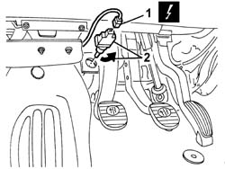

5580A38 SWITCH ON CLUTCH PEDAL FOR CRUISE CONTROL - R+R
- Path
- Procedures > 55 ELECTRICAL EQUIPMENT > 5580 SPECIAL ACCESSORIES > 5580A CRUISE CONTROL SYSTEM > 5580A38 SWITCH ON CLUTCH PEDAL FOR CRUISE CONTROL - R+R
- Kind
- repair procedure (removal / refitting; the operation number is the code)
- Applies to
- all engines; all production periods
- Interactive page
- https://sloeber94.github.io/elrnDB-aGt/en/#/125001725
Applies to: all engines; all production periods
 Removing
Removing
 Refitting
Refitting1. Disconnect the electrical connection.
Name | Connector | |
|---|---|---|
1 | Clutch pedal switch | See I31 CLUTCH PEDAL SWITCH ( FRONT ) |
2. Rotate the switch in an anti-clockwise direction (through around 90 degrees) and extract it.

Applies to: all engines; all production periods
Refitting
RemovingCheck that the switch is not damaged.
Lower the clutch pedal, then fit the switch and rotate it until it is in the end of travel position.
Release the clutch pedal.
Connect the electrical connection for the switch.
Check that the Cruise Control device works properly.